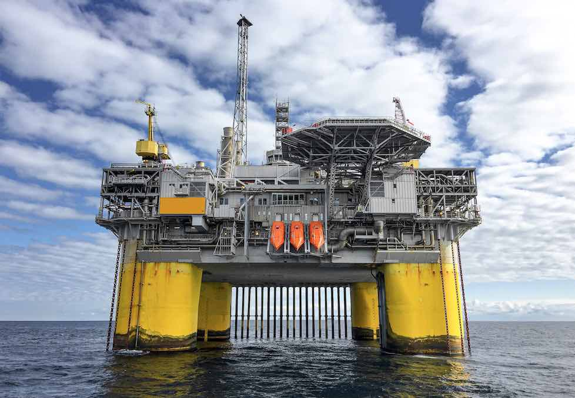

Most plastics are made of oil, natural gas or coal. Pumping and drilling are the most common forms of extraction for these resources. This bag in particular was made from oil, which was located through seismic blasting. Seismic blasting uses loud sounds to find oil reserves, but disrupts marine animals that use sound to navigate